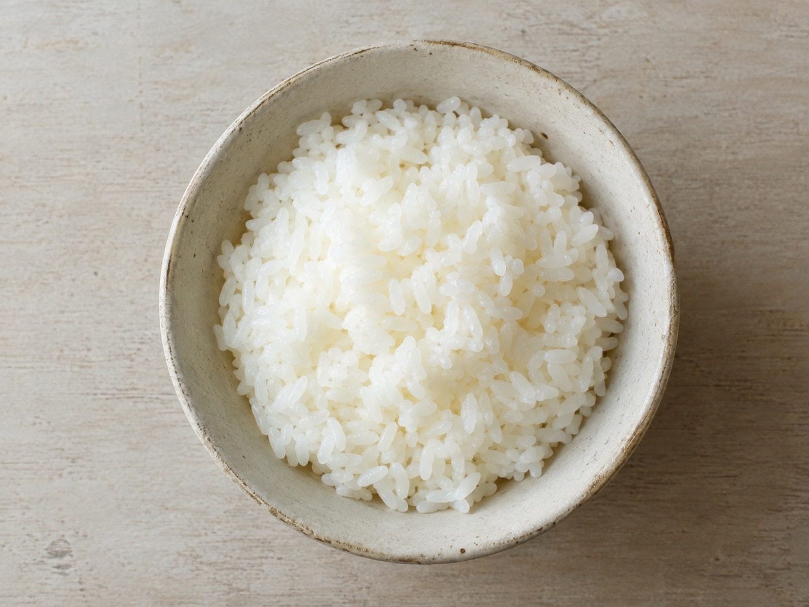
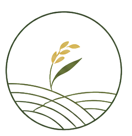
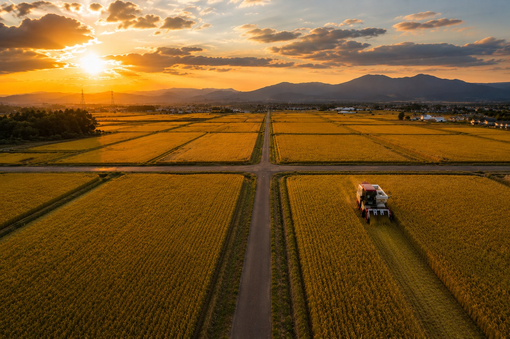
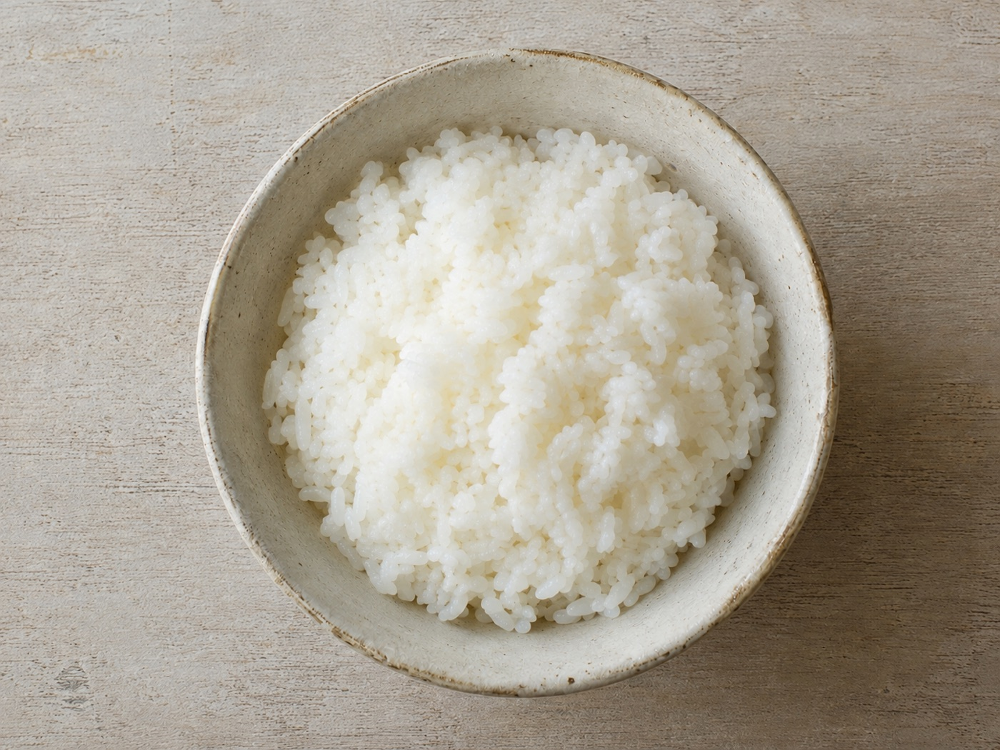
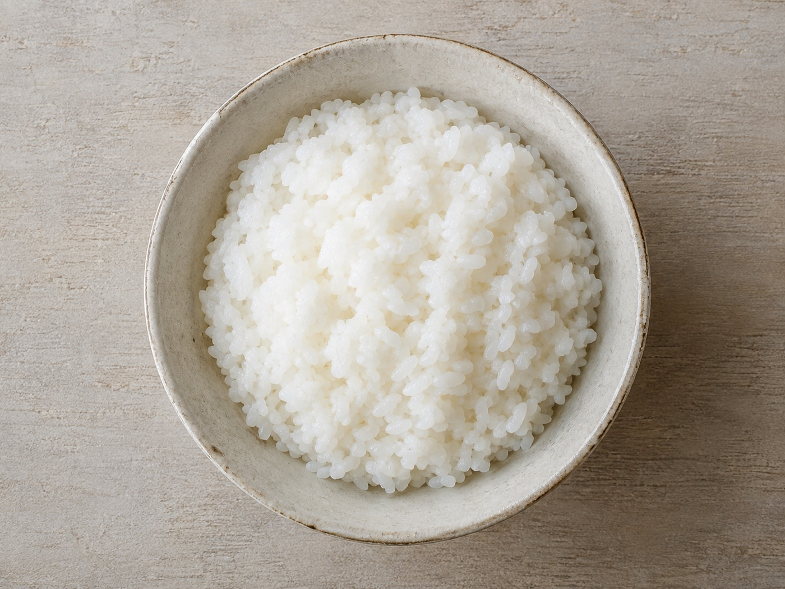
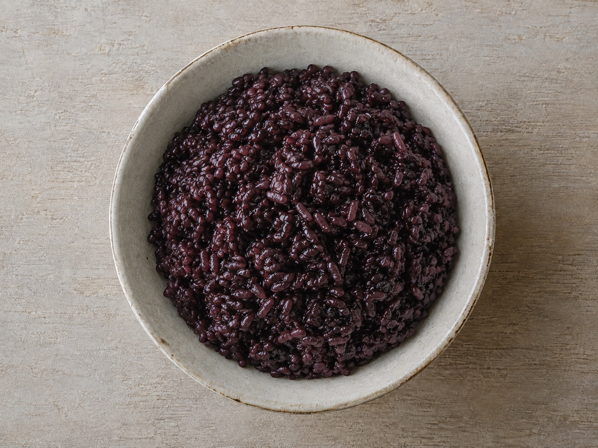
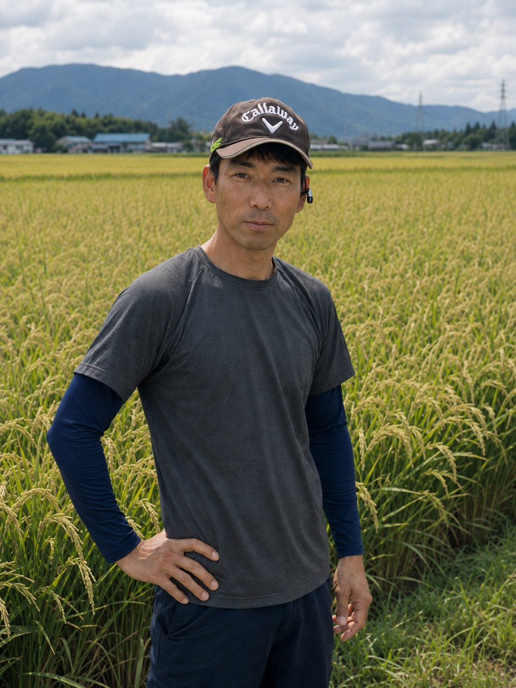

Koshihikari
コシヒカリ
Sweet and pleasantly sticky — the benchmark of Japanese rice, with flavor that deepens as you chew.
30kg · ¥24,00010kg · ¥8,000

ビオファーム豊田 Bio Farm TOYODA
BIO FARM TOYODA · OYAMA, TOCHIGI · EST. 2026
豊かな土から、ひと粒の米を — for the children
who will eat tomorrow.
◇ PLACEHOLDER · drone aerial — the Tatsugi paddies
OUR PRINCIPLE
Body and land are inseparable.
To care for the soil is to care for the body that will eat from it.
shindo-fuji — the body and the land are one.
商品一覧 — 2026 harvest

コシヒカリ
Sweet and pleasantly sticky — the benchmark of Japanese rice, with flavor that deepens as you chew.
30kg · ¥24,00010kg · ¥8,000

とちぎの星
Born in Tochigi. Large grains that stay delicious even when cool.
30kg · ¥24,00010kg · ¥8,000

にじのきらめき
A heat-tolerant new-generation variety, suited to the climate ahead.
30kg · ¥24,00010kg · ¥8,000

黒米 · ancient grain
An ancient grain. Mix a little into white rice for nutrition and color.
30kg · ¥24,00010kg · ¥8,000
THE METHOD
稲刈り直後から、土をつくる。
一
Fermented chicken manure, decomposed straw, oyster shell, fossil shell. The minerals of mountain and sea, returned to the fields.
二
Natto bacillus, lactic acid bacteria, natural yeasts. The unseen life in the soil grows the rice.
三
Tochigi's underground spring water — no pesticides, no chemical fertilizers.
四
To school lunches, to homes, and overseas. A safe, mineral-rich grain.

A LETTER FROM THE FARM
Our farm opens in October 2026 in Tatsugi, Oyama, Tochigi. On land blessed with nature, water, and soil, we grow rice that is rich in minerals and low in nitrate nitrogen.
By 2030, every grain of rice served in our local school lunches will be organic. That is our promise.
Eisuke Namai, Founder